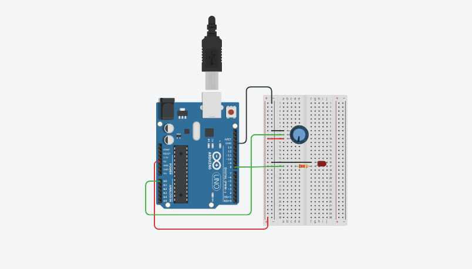

.svg)
Componentes Eletrônicos e Redes
Resistores e Código de Cores
Os resistores são componentes fundamentais em circuitos eletrônicos, usados para limitar o fluxo de corrente. Cada resistor tem um código de cores que indica seu valor de resistência. O código de cores é composto por faixas coloridas, cada uma representando um número ou multiplicador. A seguir, um exemplo de código de cores:
- Preto: 0
- Marrom: 1
- Vermelho: 2
- Amarelo: 4
- Verde: 5
- Azul: 6
- Violeta: 7
- Cinza: 8
- Branco: 9
Diodo LED e Display de Sete Segmentos
Os LEDs (Light Emitting Diodes) são diodos que emitem luz quando a corrente passa por eles. São amplamente usados em indicadores e displays.
O display de sete segmentos é utilizado para mostrar números e é composto por sete LEDs dispostos em forma de 8, sendo cada segmento controlado individualmente.
Tinkercad: Projeto de Exemplo com Print de Tela
O Tinkercad é uma plataforma online que permite a criação de circuitos eletrônicos e programação de microcontroladores, como o Arduino. A seguir, veja um exemplo de projeto no Tinkercad:
Placa Arduino e Programação na IDE Arduino
O Arduino é uma plataforma de prototipagem eletrônica de código aberto. Ele é utilizado para criar projetos interativos com sensores, LEDs e outros componentes eletrônicos. A seguir, veja como usar o Arduino na IDE (Ambiente de Desenvolvimento Integrado):
- Conecte a placa Arduino ao seu computador via USB.
- Abra a IDE Arduino, selecione a porta e a placa correta.
- Escreva o código e clique em "Upload" para transferir para o Arduino.
Entradas e Saídas no Arduino
Entrada Analógica
O Arduino pode ler sinais analógicos (como sensores de temperatura, luz, etc.) através de suas portas analógicas. O valor lido varia de 0 a 1023.
Entrada Digital
O Arduino também pode ler sinais digitais (ligado/desligado) através das portas digitais.
Saída Analógica (PWM)
A saída analógica no Arduino é realizada via PWM (Modulação por Largura de Pulso), que cria um sinal de corrente que simula uma saída analógica contínua.
Saída Digital
Você pode controlar dispositivos como LEDs e motores com saídas digitais (ligar/desligar) no Arduino.
Multímetro: O Que é e Para Que Serve
O multímetro é um instrumento usado para medir várias grandezas elétricas, como tensão, corrente e resistência. Ele pode ser digital ou analógico e é essencial para testar e diagnosticar circuitos eletrônicos.
Unidades de Medida no Multímetro
- Tensão (Voltagem): Medida em Volts (V)
- Corrente: Medida em Amperes (A)
- Resistência: Medida em Ohms (Ω)